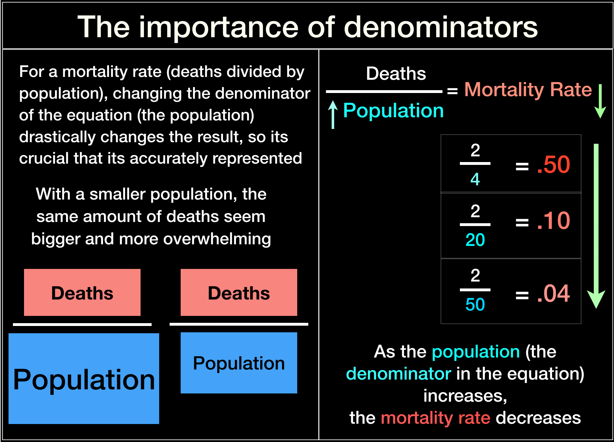

published: 16 April 2022 ...... last updated: 16 April 2022
Since the start the Covid-19 pandemic the scope of it’s severity often has been expressed by politicians, academics, and media in terms of Covid cases. The Covid death toll is then also based on this; its Covid cases who died that are listed as Covid deaths.
But relying on who is recorded as a Covid case is not the best or most accurate way to determine the impact of Covid, there is another way of measuring deaths that can be done by finding excess deaths.
What is excess death
Excess deaths are found by comparing mortality rates happening during, in the case of Covid, a pandemic, to a calculated mortality baseline of death that happened before the pandemic. Excess deaths are the total amount of deaths that deviate from that established baseline.
There is an amount of deaths that might occur that even though they may be large, don't cause death totals to be above the baseline. This may be due to the previous years having lower than usual deaths that created a death deficit.
No matter how a given baseline is calculated, death deficits, where they exist, must be ‘filled in’ with deaths in order to bring it level with the baseline, and then be higher than the baseline to be considered excess.
So at any point in time these deaths, no matter whether they are above or below the mortality baseline, may or not be Covid deaths; its possible that there is a mix of Covid and non-Covid deaths.
Why excess death?: With or from Covid
Excess death is a better way to find the true possible amount of Covid deaths than using official Covid death counts. In addition to the the issue of tests giving possible false positive or negative results, differences that various locations have in testing capacity and in criteria for labeling the cause of death also can lead to Covid deaths being inaccurately counted. Since excess death can include all types of death, it overcomes these problems.
As the prevalence of testing increases and is expanded beyond traditional settings and methods, the possibility of mis-attributing a death to Covid increases. There are large numbers of people who can have a Covid positive test result even if they are not infectious, have no symptoms and possibly never even been exposed to Covid .
Along with false negatives there is also the possibility of under-counting Covid cases. This could be due the test being done too long after symptoms started, as there is a limited optimal time to find infections.[27]
It could be that some places don't have enough testing capability, don't test in the same way as others or have different definitions of a case. For example, clinical diagnosis of Covid, when people have Covid symptoms or other evidence that there is a Covid infection, like CT scans, are not always officially labeled as Covid cases or deaths because no test was done.[28]
Labeling and lack of testing is also a problem when trying to compare Covid to other diseases and past epidemics. Various locations count flu deaths differently, and so flu might not be recorded as a influenza or pneumonia death, it may just be included in natural deaths, such as some locations being more likely to record influenza deaths in children than in the elderly. [1]
Even though its not perfect, using excess deaths is a more accurate way of measuring Covid deaths because while all excess deaths may not be Covid, and all Covid deaths might not be included in excess deaths, it gives a truer picture of the burden of Covid and is a better way to ascertain how unusual it is compared to the burden of diseases in the past.
With a clean baseline and more accurate assessment of death, further analysis can then be done if needed.
Creating baselines
Before trying to determine how many excess deaths might be from a certain cause, such as finding the impact of a disease, it is necessary to establish a mortality baseline to compare it to. Baselines are calculated different ways by different people for different purposes in order to find what is a normal and acceptable amount of death.
In order to do this, first a standard mortality rate, an amount of deaths divided by a certain population within a period of time, must be found. As a rate there always must be a period of time involved, which could be a day, a month, a year.
A mortality baseline is similar to a mortality rate, but it has important differences. A baseline is also the amount of deaths that occur over a determined period of time that is divided by some population that existed over that period of time, but the period of time chosen is longer than a year, and often encompasses several years.
So three parameters are needed for mortality rates and baselines: a type of death, a certain population, and a period of time. There are also different methods of finding baselines, and some baselines don’t include all types of death or adjust for population changes. Decisions about all of these factors can profoundly change the results.
Therefore a baseline that is to be compared to a specific type of excess death cannot be arbitrarily chosen, it needs to be calculated to take into account the most important factors for the circumstances that are being measured. It involves careful analysis to determine what periods of time, populations and methods give the most true representation of death.
Causes & types of excess death
When analyzing Covid-19 deaths and creating a mortality baseline its necessary to consider what usually causes excess deaths. Disasters that may affect people in a certain location or of certain age-groups, such as wars, fires, floods and heat waves, are causes of excess death and can be periodic, yet they are still not precisely predictable. There are also many other causes of excess death like drug overdoses, suicides, and car accidents to name a few, and some of these may be affected by social or economic factors.
Changes in public health in terms of availability of care, access to care, scientific advancements, environment, or health choices of the public can affect mortality rates and longer term trends positively or negatively, but it is often difficult to track what they are, when exactly they occurred, and to quantify their positive or negative effects individually or in combination. If any of these effects on health persists over a period of time, and that amount of higher or lower death caused by it continues long enough, it will no longer be considered excess or deficit, it will become part of a trend and therefore normal expected death.
Deaths due to common respiratory illness and pneumonia are a leading cause of excess death, and they are predictable to an extent [1], in that although the amounts fluctuate, we know they happen seasonally and will always be present. Pandemics of respiratory disease, while virtually guaranteed to happen just like other disasters, are more unpredictable causes of excess deaths, where the timing and scope can vary greatly.
The importance of population
For a mortality rate, deaths divided by population, changing the denominator of the equation (the population) can drastically change the result. Given the same number of deaths, if the population goes up, (ie, the denominator of the equation is increased) the mortality rates goes down.

Since excess deaths and mortality baselines are based on a mortality rate, errors in the rate will also then be reflected in the baseline and then the excess deaths, so it is crucial that it is accurately represented.
Not taking into account changes in populations, such as an increasing numbers of people in certain age groups, can make large numbers of deaths seem alarming. However, if properly accounted for, places where susceptible populations have increased will also have increased amounts of expected deaths and therefore correspondingly fewer excess deaths.
What should be the population used for Covid?
The population being used for the baseline can include factors like a physical location such as the population of a country, a state, a city, and also could include different categories, such as race, age, or economic status. These non-geographical populations are important for proper analysis, as some have more relevance to the type of death being compared and will give higher quality results.
For Covid age is the most important factor
Age is always an important factor to consider when examining the extent of certain types of deaths, because age groups differ in both their normal mortality rates and in causes of mortality. Its well known that mortality rates dramatically increase with age [2], and death due to disease also increases with age, with certain diseases having more age-dependent patterns [3], so age is a good and reliable predictor of death.
Age is a determining factor for respiratory epidemics. There are many things that may cause death rates to vary among age groups in a pandemic. The reason for different ages being affected might be due to many factors, including previous exposure to similar viruses [4] or inadequacies of the immune system at certain ages [5][6], but it is clear age is a determining parameter of many epidemics, with certain age groups being more affected than others. [7][8]
The elderly are often more susceptible to excess death from respiratory illness or complications from them [1]. This is an especially important factor to consider during the Covid pandemic, because Covid is also a respiratory illness [9] that can cause the same disease course and complications as flu. [10][11]
Age is the most important factor in the current Covid-19 pandemic. Covid was quickly proven to affect older age groups at a rate significantly higher than younger ages, so age should be the most important population group considered when creating a baseline. Only a few weeks into the epidemic it was universally clear that age coupled with co-morbidities and pre-existing conditions were the main determinant of the severity of illness and amount of deaths. [12]
During the Covid pandemic there was a remarkable apparent disappearance of flu and many other common respiratory illnesses that usually cause excess death [30].
This is another reason to take special care with the baselines in both population and period. Not considering population-age structure is very irresponsible in these circumstances.
Knowing that Covid affects the same certain age profile means its possible that the people who would have died during a bad flu season are the same people who would be susceptible to dying from Covid.
A percent of the younger age-band group is always moving into the older age-band group. This is not as significant a phenomenon in age groups where there are less deaths taking place, nor in areas where all age bands maintain about the same number in their populations.
However, it does profoundly affect excess death calculations in age groups were there are a large percent of deaths and the population of those age bands has grown.
Age is known to be important for calculating mortality trends, as we’ll see later. That is why accounting for the changes in the populations of age groups has always been considered by actuaries and public health planners. The initial appearance of unusually high numbers of death, once put in the perspective of the populations of age groups, may in fact come closer to what would normally be expected in those older age groups.
Baselines time period
The time period considered is one thing that makes a mortality baseline different from a mortality rate. Often mortality rates are done for shorter periods of time that may be too erratic to give a good representation of true mortality, whereas a baseline encompasses multiple years to account for these incidental variations.
Since mortality baselines encompass longer periods of time over several years, decisions have to be made about how many years to use. The chosen baseline period can have a big effect on how much excess death there appears to be, and some methods are much more robust and less susceptible to natural random fluctuations in death rates.
Deaths naturally occur in ripples or waves of weeks or months throughout the year, and they also occur in waves spanning across years. Choosing a range of years that encompasses an entire wave of death gives more accurate results. In many places deaths have peaks every so many years followed by a trough after that. Using just the most recent 1 to 2 years might not include a complete wave of these deaths. It is therefore important to use enough years for the baseline so as to encompass the multi-year wave of peaks and troughs.
The danger of following mortality trends
After choosing a period of time and the populations to be considered, there are a few ways to calculate excess death; both methodology and the parameters chosen are equally important.
One way of making a mortality baseline is to take the average of a number of previous years to find a normal amount of death to use for comparison. This will find a reasonable amount of death that was recently considered acceptable for a population.
The baseline resulting from this will never be higher than the highest amount, nor lower than the lowest amounts of the years used.
Trends are another way of assessing death that also use mortality rates and baselines, but they have differences. Trends don’t use averages of the most recent years’ mortality rates, instead they try to predict whether the mortality rate will increase, decrease, or stay the same, based on the mortality rates of previous years.
This is a key point, trend lines make many assumptions and are projections of what will happen in the future, and so it's baseline could be much higher or lower than the amounts of deaths from the years used to create the baseline.
Predicting future deaths from mortality trends is a popular way to measure excess death, and at first projecting past trends onto the Covid era to determine what normal mortality should have been might seem like an ideal way of finding excess death, but it has many flaws.
Using the trend line method, if mortality rates had been on an upward trend it will predict more deaths will happen than recent previous years. Therefore, since more death was expected, it can appear there is fewer excess deaths. Conversely, if mortality rates had been on an downward trend, it will predict less deaths will happen than previously, and therefore because less death was expected, it can appear that there is more excess deaths.
It should also be noted that when a linear trend baseline is based on a static set of years, if the trend had been previously downward, even if regular death rates level off, excess deaths will appear to increase with each passing year.
Using trends can cause errors in judging excess death because:
trend lines have not been perfect predictors of death for a given year
causes of changes or steadiness in trend are not well understood and so can’t be accurately predicted
Mortality has a narrow range of possibilities. A steadily increasing mortality rate could signify an approaching extinction event in a population, which would currently be very unlikely for humans, but at least possible since we have seen it in other species. Its counterpart, immortality, as far as we presently know is not possible. Even if it were considered possible, immortality will not be achieved spontaneously with no prior indication via scientific advancement. Even a population being capable of reaching and sustaining the upper limit of known longevity for humans is currently unlikely, so there are some bounds on the mortality rates we can expect in the near future. Therefore if the trend for mortality rates had been decreasing, we know that given the current laws of the physical world they cannot continue decreasing at that rate for long, nor can they continue to decrease indefinitely, they will have to level off or begin increasing.
At what point readjustments in trend may occur is not easy to predict.
The Sand Pile Effect
One of the reasons trends can be unreliable is that since exact causes of changes are unknown, as these limitations of mortality are approached its hard to predict when a leveling off or reversal of trend will happen.
The sand pile effect is a theory that partly addresses this issue of how something that appears to be stable, like a mortality trend, can collapse apparently on its own or when confronted with something small [13][14].
A sand pile can remain stable even while more sand is added, until for some reason at some point just the addition of one more grain of sand destabilizes the pile and causes a large avalanche or collapse.
The proportion of susceptible people in the population can keep growing without changing the overall mortality trend, yet while a trend may remain steady and seemingly easy to predict, in reality it may be becoming more and more unstable. Some condition could inevitably destabilizes it and set off a collapse, which in relation to mortality trends would mean a period of excess deaths.
Mortality trends are not good predictors of death
There are often dynamic changes in trend that are unable to be accounted for [16], which makes predicting deaths from a trend line for a specific year very difficult.
As seen in the section about causes of excess death, there may be many reasons for changes in a mortality rate, and thus also baselines or trends: natural disasters, scientific advancement, as well as economic and environmental conditions. The unpredictability of these changes and inability to fully understand the cause of them are reasons that make using trends an unreliable method for finding a reasonable amount of death for a specific year, especially without very detailed trend analysis being done.
Mortality trends and age
There are often many unexpected fluctuations in mortality that are not well understood, but study of trends shows that one factor that is known to consistently affect trendlines and the appearance of excess death is the age structure of a population [16]. This is because as we’ve seen before, age is a good predictor of certain diseases and death [15].
There are both expected and unexpected changes in mortality trends.
Some changes can often be accurately predicted, like what happened in the UK in 2011 where an upward trend change was expected and able to be predicted because it was due to an aging population, but after that there were unexpected changes in mortality. However, among those dynamic fluctuations there was also one increase in mortality in 2015 that was able to be accounted for.
When there are apparent abnormalities in mortality trends actuaries and analysts have found that age is critical, and that examining the population and properly age-adjusting mortality rates often resolves the issue of unexpected increases. That is exactly what was done in 2015 in the UK when there appeared to be many excess deaths and an alarming increase in death rate, it was discovered that changes in populations size with regard to age structure hadn’t been accounted for. When corrected, the excess death was almost non-existent. [16]
Population size, the bottom part of a mortality ratio equation, (deaths/population), is important because an increase in it’s size lowers the mortality rate. It is well known that age adjustments of the population structure must be done to reconcile excess deaths with mortality trends. Doing so can completely account for the illusion of an increase in death rate and show that the deaths are regular, normal deaths that would be expected, and not excess deaths as they first appeared to be.
So the age banding of death-rates is one aspect of knowledge gained from examining trend-line methods that can and should be brought to other types of methods of finding excess death.
Popular methods of estimating excess death in the Covid Era
We've seen how important it is to consider population and age when estimating excess deaths. Knowing whether or not estimates you might see somewhere are truly age-banded can be confusing. Just seeing that a estimate or graph at some point is showing results separated into age groups does not mean that total results are calculated using age bands. Very often they are not, and the difference can be profound. The death rate of an entire population where all ages are added together at the beginning gives very different results from the death rate of age bands that that are summed in the last step of calculations. Only the last method gives truly age-banded results.
There are many popular and easily accessible resources on websites that are used by politicians and the public to assess the Covid crisis and attempt to make informed decisions. Unfortunately the methods used by these sources for estimating excess deaths do not take all of these important factors into consideration.
They all have significant flaws in these key categories of population, period, or other aspects of their methods that drastically alter the results for many locations and make excess deaths due to Covid-19 seem artificially high, such as:
eliminating months of death from their baseline
do not adjust for age
use trend lines
use insufficient data to make predictions
Islam et al
The method used by Islam et. al. [20] uses averaging and age-banding, but made incorrect choices in what types of death to include when creating their baseline that severely skew excess deaths to appear high.
They eliminate all deaths that occurred in months that are typically flu season. Not only do flu deaths account for a large amount of normal death, but in many geographical areas those months in which flu deaths occur are also months where there is a very large percentage of deaths from other disease and excess deaths [29]. They also eliminate all deaths from months when there were heatwaves.
Eliminating all of these months of deaths creates a very unrealistic profile of expected deaths for most locations.
Normal mortality from all causes increases with age, which creates further problems with their excess death estimates because both flu and heatwaves affect the same age groups where Covid deaths are likely to happen [18][17], and the winter months that were removed are also the months that can have higher non-flu deaths from diseases that disproportionately affect upper age groups.
Removing these months of death will then give very inaccurate results for normal expected deaths for a location. It causes their baseline to be unnaturally low, and so it will make their excess death estimates artificially high.
CDC and EuroMOMO
Since one of the most common causes of epidemics and excess deaths is common respiratory illness like influenza and other coronaviruses that are usually categorized as Influenza-Like Illnesses (ILI) and the pneumonia that they can cause [1], some institutions like the CDC in the United States and EUROMOMO in Europe create their excess death mortality baselines to operate as a disease surveillance system.
Other researchers have noted that the methods they use do not have enough past data to train their models, and that their "... detection accuracy (such as the sensitivity and specificity of detecting outbreaks) is unstable, especially when the long-term data are unavailable" [31].
These models are not truly age banded, and they also do not properly account for variability of climate over broad and differing geographical areas. They use use some seasonality, but don't include winter or summer months that normally have peaks of higher amounts of death. While understandable for a flu surveillance system, it creates unrealistically low estimates for what a normal amount of death would be.
[25]
mortality.org
The website mortality.org has a dashboard based on it's Human Mortality Database (HMD) [21] with many different ways of finding different kinds of excess death with categories that can be selected by the user. Some of their datasets had also been used by Our World in Data and other sites and researchers use them to due their own assessment of Covid-19’s impact.
There is a place where you can select age-bands. However, while those allow viewing of a single age band, the total excess death estimates are not age-banded, so their excess death estimates and graphs are not calculated using age-specific mortality rates and will often over-estimate deaths.
Standardization is very important and critical for any meaningful comparison, but is only used with one selection “Death Rate”.
The time period selections they use also have flaws for finding accurate overall excess death: “Week Specific Trend” uses trend lines; All “Lower Quartile” selections will by their nature statistically over-estimate excess death; "Summer Average Week" ignores mortality in the winter months, the months where in many locations most deaths happen; "Yearly Average Week" will also skew the results for deaths that happen outside of normal flu seasons.
"Week Specific Average" is the only one that has a useful time period for overall excess death.
Ariel Karlinsky
Ariel Karlinsky is an economist and statistician whose mortality and excess death databases [23][22] have become the foundation of some of the most prevalent and accessible Covid-era death estimates available to the public.
The Economist uses the his excess deaths, and so does the website “Our World in Data” (OWID), which has been a resource for many categories of Covid information for policymakers, the public, the media and researchers since the start of the pandemic. It has used the datasets and methods of a few sources to create it’s excess death dashboard, but since September 2021 OWID has used Ariel Karlinsky's methods and estimates of for it's mortality and excess deaths.
Unfortunately for something that is so widely relied upon, the method Karlinsky uses has large flaws in all of the important areas outlined earlier: type of death, population, and trend.
Age-banding was not used
Amounts of certain types of death were removed for certain locations
He uses unanalyzed trend lines that are merely linear projections of only the most recent 5 years of death
For some regions his methods make it mathematically impossible for deaths to ever return to a normal level
Heatwaves
Karlinsky’s methodology arbitrarily selects an absolute number, not even a percent of a population, at which to exclude certain types of excess deaths. Particularly concerning is heatwave deaths, which very often effect the same age-groups as Covid does [17][18]. Arbitrarily removing them skews the results for selected locations and creates unfair comparison across locations.
A prime example of this is Israel. Israel had an extreme heatwave during the time of Covid, and their excess deaths from that heatwave managed to be just beneath Karlinsky's chosen cutoff for removal from his totals/estimates, so those excess deaths he wrongly attributes to Covid-19 even though we know they have a different cause.
No age-banding, No analysis
"This model can capture both seasonal variation in mortality and a yearly trend over recent years due to changing population structure or socio-economic factors.” -- (Quote from Karlinsky's paper published in elife: 'Tracking excess mortality across countries during the COVID-19 pandemic with the World Mortality Dataset')
Karlinsky claims that his formula and model address issues typical of those who analyze trend lines, such as changes in the structure and composition of the population and socio-economic issues. OWID also repeats this fallacy, claiming that his model will “account for year-to-year trends in mortality”. That is false.
Karlinsky does not take these factors into account anywhere, not mathematically nor in his analysis. Karlinsky uses a basic linear regression trend. He hasn’t done any mortality trend analysis, and his model for his baseline is nothing more than the classic formula for slope of a line that some may remember from Algebra class. Population structure, age structure, socio-economic factors are not dealt with in his models and estimates. There is no place in any of his formulas that shows any incorporation of age structure of the baseline years, let alone changing population structures for the pandemic years.
True trend analysts look at all traditional indictors that could affect the mortality trend [26], Karlinsky’s method is not a trend analysis as he claims, it is merely projecting the continuation of a short line.
Unfortunately Karlinsky's inadequacies go further than gross ineptitude, some of his calculations of excess death are outright fraudulent, such as they are for Brazil. To see how he artificially and permanently keeps Brazil's mortality in excess so that it will never return to normal no matter what happens with Covid or any other disease, read The Noise from Brazil.
Dr. Michael Levitt's excess death method
Dr. Levitt’s work has contributed greatly to the fields of data analysis and epidemiology and to our understanding of the Covid pandemic in many countries of the world and the US states.
His methods are unique as an academic work that takes into account all of the most important criteria for an accurate measure of excess death during the Covid era. [Most recent estimates for states and countries with comparison charts here]
Method: Dr. Levitt’s method does not use trend lines due the complexity of properly accounting for the potential underlying factors that could influence it and the sandpile effect. However, he has adopted the most important aspect of trend analysis, ensuring that population size and structure is accounted for and establishing a mortality rate baseline for each individual age band.
Dr. Levitt was one of the first to use the critical parameter of age banding for excess deaths in the Covid-19 pandemic, when in March 2020 he established very accurate estimates of how much death to expect by making sure population structure was properly accounted for.
After that success, he then went on in February 2021 to make his own more precise mortality baseline using averages of age-banded mortality rates of recent years in order to get a good approximation of what a reasonable amount of normal death would be for the Covid pandemic years.
His baselines remain completely age-banded until the final step. The mortality rate is calculated and standardized separately for each individual age-band before averaging the baseline years. The same is done for the pandemic years, then the excess is calculated by finding the difference per age band between the baseline and the pandemic deaths. This is critical, because age banding after averaging does not take into account the increase or decrease of the population of the age bands.
It was an essential choice to use age-banded mortality rates throughout the process, and in doing so Dr. Levitt is employing a traditional technique used by actuaries and other mortality analysts to insure that what appear to be abnormalities in mortality are not related to changes in the changing age structure of a population [16].
Indeed, accounting for changes in age structure has found true excess mortality during the CoVID pandemic is often lower than estimates derived without age-banding by several percentage points.
Data Sources: Data is gathered only from publicly available databases that contain primary data in it's original form from confirmed official sources, and as such the data has not been altered in any way before calculations are performed. All-cause deaths and populations of countries, regions and New York City are from mortality.org ; All-cause deaths of individual US states are from the Center for Disease Control (CDC) and populations of individual US states are from United States Census.
Type: Dr. Levitt does not remove any types of deaths, his calculations include all causes. While removing some types of death such as heatwave deaths may help in some places to find a closer estimate of how many excess deaths were due to Covid, it reintroduces one of the main problems: how death-types are labeled. Removing only select types of death wouldn't remove all non-Covid excess deaths, so it would create a lopsided estimate and also makes it harder to make location-to-location comparisons.
Time Period: Mortality for the 3 calender years prior to the first Covid pandemic year (2017, 2018, 2019) are averaged to create the normal mortality baseline for each age group.
Delays: Very recent mortality figures may not include all deaths because of reporting delays. In order to reduce the chance of that affecting estimates delay periods are assessed in order to give more accurate results. Only data that is likely to be complete is used, putting accuracy ahead of instant gratification.
Quality: Often the data that some countries make available is not sufficiently reliable in some way to create an accurate excess death estimate. After careful analysis Dr. Levitt determined that some locations do not have good enough data available to establish a reasonable excess death count, and in order to maintain the integrity and reliability of his results, he does not include those locations in his official excess death estimates.
Dr. Levitt Excess Death Protocol
Using this method the baseline for each comparison year of the pandemic (currently 2020, 2021, 2022) will be different, because the population structure, the size of the both the total population and population of each individual age band for each comparison year of the pandemic, is also different:
find crude mortality rate for each age band for each week for baseline years
standardize this mortality rate for each age band
average the standardized mortality rate for each age band of the weeks of the years that will be used for the baseline
find crude mortality rate for each age band for each week for pandemic year
standardize this mortality rate for each age band
average the standardized mortality rate for each age band of the weeks of the years that will be compared to the equivalent baseline period
find the difference between the standardized mortality rate for each age band of the weeks of the target year of the pandemic that is being compared and the baseline of the same period in order to get excess deaths for each age band
Modeling smaller: simpler is better to avoid over-fitting
While instinctively one might think that more is always better, and so that considering more possible factors and having more variables will give more accurate results, in fact the opposite is true. Even if it appears that it initially works work well, including too many factors can actually lead to more mistakes. The best methods, such as what Dr. Levitt uses, involve careful analysis to find a few well-chosen factors that are most important for the circumstances.
4. Gostic KM, Ambrose M, Worobey M, Lloyd-Smith JO. Potent protection against H5N1 and H7N9 influenza via childhood hemagglutinin imprinting. Science. 2016 Nov 11;354(6313):722-726. doi: 10.1126/science.aag1322. PMID: 27846599; PMCID: PMC5134739
https://www.ncbi.nlm.nih.gov/pmc/articles/PMC5134739/
5. Monto AS, Malosh RE, Petrie JG, Martin ET. The Doctrine of Original Antigenic Sin: Separating Good From Evil. J Infect Dis. 2017;215(12):1782-1788. doi:10.1093/infdis/jix173 https://www.ncbi.nlm.nih.gov/pmc/articles/PMC5853211/
6. https://en.wikipedia.org/wiki/Naive_T_cell
7. Laura Cilek, Gerardo Chowell, Diego Ramiro Fariñas, Age-Specific Excess Mortality Patterns During the 1918–1920 Influenza Pandemic in Madrid, Spain, American Journal of Epidemiology, Volume 187, Issue 12, December 2018, Pages 2511–2523, https://doi.org/10.1093/aje/kwy171
8. Cobos AJ, Nelson CG, Jehn M, Viboud C, Chowell G. Mortality and transmissibility patterns of the 1957 influenza pandemic in Maricopa County, Arizona. BMC Infect Dis. 2016;16(1):405. Published 2016 Aug 11. doi:10.1186/s12879-016-1716-7 https://www.ncbi.nlm.nih.gov/pmc/articles/PMC4982429/
9. https://www.cdc.gov/dotw/covid-19/index.html
10. https://pubmed.ncbi.nlm.nih.gov/21288835/ Bunce PE, High SM, Nadjafi M, Stanley K, Liles WC, Christian MD. Pandemic H1N1 influenza infection and vascular thrombosis. Clin Infect Dis. 2011 Jan 15;52(2):e14-7. doi: 10.1093/cid/ciq125. PMID: 21288835
17. Zhang, L., Zhang, Z., Ye, T. et al. Mortality effects of heat waves vary by age and area: a multi-area study in China. Environ Health 17, 54 (2018). https://doi.org/10.1186/s12940-018-0398-6
18. Perčič S, Kukec A, Cegnar T, Hojs A. Number of Heat Wave Deaths by Diagnosis, Sex, Age Groups, and Area, in Slovenia, 2015 vs. 2003. Int J Environ Res Public Health. 2018;15(1):173. Published 2018 Jan 22. doi:10.3390/ijerph15010173
20. Islam N, Shkolnikov VM, Acosta RJ, et al. Excess deaths associated with covid-19 pandemic in 2020: age and sex disaggregated time series analysis in 29 high income countries. BMJ. Published online May 19, 2021:n1137. doi:10.1136/bmj.n1137
21. Németh L, Jdanov DA, Shkolnikov VM. An open-sourced, web-based application to analyze weekly excess mortality based on the Short-term Mortality Fluctuations data series. Lanza Queiroz B, ed. PLoS ONE. 2021;16(2):e0246663. doi:10.1371/journal.pone.0246663
22. Karlinsky A, Kobak D. Tracking excess mortality across countries during the COVID-19 pandemic with the World Mortality Dataset. eLife. 2021;10:e69336. doi:10.7554/eLife.69336